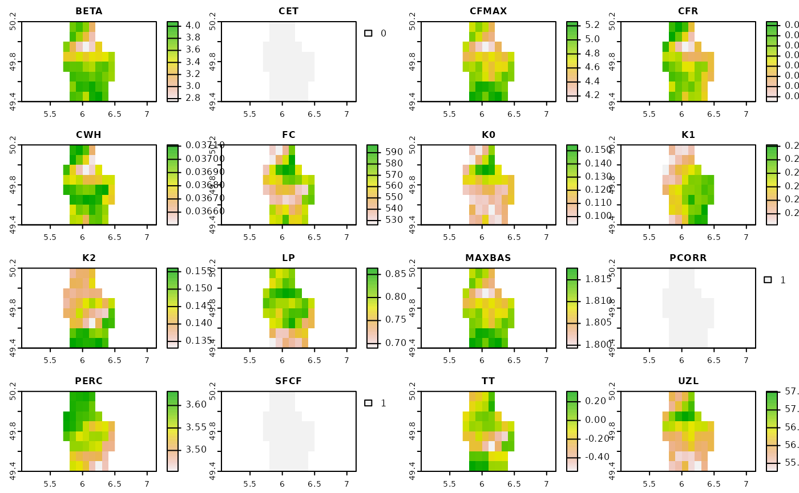

1) Disclaimer & Preprocessing logic
Beneath is the example how can one download and preprocess HBV parameter maps created by Beck et al. (2020). The initial dataset was distributed as NetCDF file. It contains ten cross-validation folds of 12 parameters:
BETA – Shape coefficient of recharge function
FC – Maximum soil moisture storage (mm)
K0 – Recession coefficient of upper zone (day−1)
K1 – Recession coefficient of upper zone (day−1)
K2 – Recession coefficient of lower zone (day−1)
LP – Soil moisture value above which actual evaporation reaches potential evaporation
PERC – Maximum percolation to lower zone (mm day−1)
UZL – Threshold parameter for extra outflow from upper zone (mm)
TT – Threshold temperature (°C)
CFMAX – Degree‐day factor (mm °−11 day−1)
CFR – Refreezing coefficient
CWH – Water holding capacity
We converted every fold to the Cloud-Optimized GeoTiff (COG) using the following GDAL command: gdal_translate ordinary.tif COG.tiff -co COPY_SRC_OVERVIEWS=YES -co COMPRESS=LZW -co TILED=YES. The final COG was validated using the python script. Thus we ended up with 10 COGs with 12 bands each.
2) Example workflow
The essential aim of the hbv_get_parameters function is to ease the accessibility of HBV parameter maps created by Beck et al. (2020). Therefore this function allows to download any of the cross-validation folds for your particular area of interest (AOI).
Let’s imagine, you need to download first, second and fifth folds for the Luxembourg.
library(HBVr)
#> Loading required package: terra
#> terra 1.6.7
# library(tmap) # for vizualisztion purposes
# library(sf) # for vizualisztion purposes
# Locate the shapefile
f <- system.file("ex/lux.shp", package="terra")
# Read it as SpatVector
v <- vect(f)
# Plot it!
# tmap_mode("view")
#
# tm_basemap("Stamen.Terrain") +
# tm_shape(st_as_sf(v)) +
# tm_polygons()Initially, the hbv_get_parameters function has two types of output. First is the mean zonal statistics which is computed with terra::global in the background. Second one is the simple SpatRaster output.
To download 1, 2 and 5 folds we need to specify it in the function. Here is the example how can we retrieve mean values for the entire Luxembourg.
zonal_stat <-
hbv_get_parameters(
aoi = v,
folds = c(1, 2, 5),
mean = TRUE
)
#> Downloading rasters...
#> Cropping rasters...The output of zonal_stat is hidden below ↓
zonal_stat
#> $fold_1
#> mean
#> beta 3.28827362
#> FC 397.27255745
#> K0 0.45688133
#> K1 0.33620186
#> K2 0.15122986
#> LP 0.67929192
#> PERC 6.54499855
#> UZL 73.98409042
#> TT -3.25675583
#> CFMAX 4.50942764
#> CFR 0.08118668
#> CWH 0.18391457
#>
#> $fold_2
#> mean
#> beta 3.40123062
#> FC 181.61276817
#> K0 0.15298271
#> K1 0.30910225
#> K2 0.12298813
#> LP 0.40615349
#> PERC 7.60681343
#> UZL 64.74375725
#> TT -0.36138115
#> CFMAX 5.41066704
#> CFR 0.01381912
#> CWH 0.16261673
#>
#> $fold_5
#> mean
#> beta 4.60768394
#> FC 348.73093376
#> K0 0.26133881
#> K1 0.20693245
#> K2 0.16530495
#> LP 0.93026009
#> PERC 1.82667274
#> UZL 49.68159256
#> TT -1.33735924
#> CFMAX 6.17519302
#> CFR 0.02514114
#> CWH 0.10989838To download SpatRaster objects we need to run the following code chunk:
rasters <-
hbv_get_parameters(
aoi = v,
folds = c(1, 2, 5),
mean = FALSE
)
#> Downloading rasters...
#> Cropping rasters...
#> Projecting rasters...The output of rasters is hidden below ↓
rasters
#> $fold_1
#> class : SpatRaster
#> dimensions : 15, 16, 12 (nrow, ncol, nlyr)
#> resolution : 0.04998981, 0.04998981 (x, y)
#> extent : 5.749202, 6.549039, 49.43621, 50.18605 (xmin, xmax, ymin, ymax)
#> coord. ref. : +proj=longlat +datum=WGS84 +no_defs
#> source : memory
#> names : beta, FC, K0, K1, K2, LP, ...
#> min values : 1.280844, 87.36705, 0.1660908, 0.1255526, 0.08126038, 0.5035474, ...
#> max values : 4.703930, 782.77252, 0.6295767, 0.4307190, 0.20001221, 0.7953050, ...
#>
#> $fold_2
#> class : SpatRaster
#> dimensions : 15, 16, 12 (nrow, ncol, nlyr)
#> resolution : 0.04998981, 0.04998981 (x, y)
#> extent : 5.749202, 6.549039, 49.43621, 50.18605 (xmin, xmax, ymin, ymax)
#> coord. ref. : +proj=longlat +datum=WGS84 +no_defs
#> source : memory
#> names : beta, FC, K0, K1, K2, LP, ...
#> min values : 1.000000, 65.5924, 0.04998779, 0.1619923, 0.0753507, 0.2000122, ...
#> max values : 5.999515, 360.8982, 0.31310526, 0.4385946, 0.1725364, 0.7933550, ...
#>
#> $fold_5
#> class : SpatRaster
#> dimensions : 15, 16, 12 (nrow, ncol, nlyr)
#> resolution : 0.04998981, 0.04998981 (x, y)
#> extent : 5.749202, 6.549039, 49.43621, 50.18605 (xmin, xmax, ymin, ymax)
#> coord. ref. : +proj=longlat +datum=WGS84 +no_defs
#> source : memory
#> names : beta, FC, K0, K1, K2, LP, ...
#> min values : 2.849582, 222.5757, 0.04999479, 0.05236027, 0.07841196, 0.6440166, ...
#> max values : 5.777176, 459.7742, 0.68407023, 0.29351634, 0.20001221, 1.0000000, ...The function returns a list of SpatRaster objects. The first one, i.e. Fold 1, can be plotted like this:
plot(rasters[[1]])